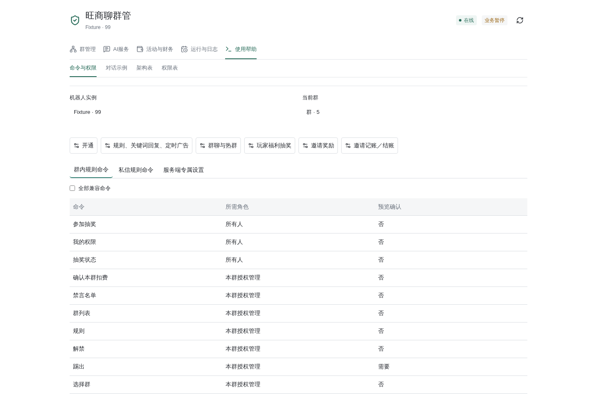

名单互斥／移除已于北京时间2026-10-23 22:59:23完整重启加载（PID4071721，NRestarts=0）。 保护快照22面／config一致；本轮未新增真实成员操作／处罚，旧needs_review12不重试， 不把离线回归、UI夹具或性能基准当作真实满链路验收，见维护最新记录。 新增同bot＋group＋UID互斥，已在另一名单须先移除，不自动转移／删除； 历史重叠保留、黑名单优先、分别移除，移除黑名单不解禁也不删除白名单。此前时长加载证据不覆盖本修复。
北京时间2026-10-23 20:02:56完整重启已加载，在线配置流程通过；本轮真实新重入／禁言未测。 当日16:53:53加载及三踢实测仅属旧策略历史，下方旧记录保留原范围。 不新增或猜测菜单编号，直接发命令即可。黑名单只作用于同一机器人＋同一群。
本群黑名单（须核验原生群主／管理员及本群管理授权）
├─ 查看：黑名单列表；黑名单缺少可信目标时提示补充
├─ 添加：原生回复单一目标后发「黑名单」，或真正@单一目标加「黑名单」
└─ 移除：原生回复或真正@单一目标加「移除黑名单」
本群时长：黑名单禁言时长 N分钟／N小时／N天
→ 核对本机器人／本群／换算分钟数预览 → 本人新消息：确认黑名单 token
私信黑名单（每步一条新消息）
群列表 → 选择群 序号
├─ 添加黑名单 名称（搜索本群成员）
└─ 移除黑名单 当前名／保存旧名／精确UID（只搜索本群已有名单）
→ 选择黑名单 本次搜索结果序号
→ 核对本机器人／本群／唯一目标预览
→ 本人发送：确认黑名单 本次预览令牌
私信时长：群列表 → 选择群 序号 → 黑名单禁言时长 29天
→ 核对本次时长预览 → 本人新消息：确认黑名单 token
后台：群管理 → 规则 → 黑名单设置
读取／搜索 → 核对目标及版本 → 预览 → 本人确认提交
黑／白名单移除：列表行移除图标 → 预览 → 本人确认（含退群／改名记录）
移除模式：当前名／保存旧名／精确UID → 选择已有记录 → 预览 → 本人确认
时长设置 → 核对机器人／群／分钟数 → 预览 → 本人确认保存
白名单移除可用移除白名单 当前名／保存旧名／精确UID，仍搜索、选择、预览确认。
添加仍按真实当前目录名称搜索，不能UID盲添加；移除UID仅定位本机器人本群已有记录。
群内不能以昵称、UID、手打@、复制引用或多人目标代替原生回复／真实@。添加只登记，
不立即处罚，既不踢出也不禁言。每次可信真实重新入群直接禁言并留群，不再踢人。
时长默认29天＝41760分钟，支持黑名单禁言时长 N分钟、黑名单禁言时长 N小时、
黑名单禁言时长 N天，换算后须为1..41760整分钟；按机器人＋群隔离，须预览本人确认。
修改只影响确认后新的真实重入，不自动重设已有禁言、不追罚；重复通知、添加、重启或普通发言不续封。
未知回执暂停核对、不重试。移除不解禁，解禁不移除名单；白名单不覆盖黑名单。
群主、管理员及机器人受保护，只有精确授权隔离fixture例外；普通自动踢人仍禁止，普通禁言24小时上限不变。
无权限先查我的权限，请群主／负责人核验原生角色和本机器人本群授权；选错群先取消，
重新选群、搜索预览，不复用旧令牌。AI只解释，不执行、查询实时名单或代确认。
旧→新：前三次成功踢出后固定29天 → 首次起每次真实重入直接禁言、时长可设；
历史计数不再驱动阶段，旧「黑名单」→「黑名单设置」。三踢实测仅作带日期历史，不冒称新规则通过。
「看得见」仅记为对应展示的用户手机确认，不证明未来真实到期已发生。
本轮仅离线与在线配置验证通过，无新踢人／禁言实际处罚；20:24:00保护复核完成，
其他保护面匹配，测试版本及已审计后台并发修改保留，不宣称tenants原始整体hash全同或正式群从未变动。
证据见维护记录；教程／索引／PDF重新生成但不向dist同步。
图片入口仍为群管理 → 规则 → 关键词回复与定时发言：关键词每条1图先图后文，
定时每计划最多3图、每次1图按1→2→3→1轮换；素材私有、仅本机器人本群去重，不需公共图床。
三条错峰是三个独立计划，默认00／20／40分、各自60分钟一次；应用时间只改草稿，须启用并预览确认保存。
已有私信广告图片 计划序号仍可录入定时图，不是关键词收图命令；关键词配图只在表单维护。
上传失败检查静态JPG／PNG／WebP格式、5MB限制、群和权限，等控件恢复并核对素材／保存回执后重新选图预览；
未知结果不重复上传或确认。没有后台权限请负责人配图，不共享密码。
详见规则与AI分权。
发送「菜单」「帮助」默认只显示五类：本群状态、成员操作、抽奖与邀请、AI与额度、 插件设置，并按原权限过滤财务及仅规则群的AI入口。常用命令直接发送即可， 不用先进入菜单，例如「规则」「禁言名单」「解禁 @成员」「参与玩家福利抽奖」。 真正的@必须从客户端选人，危险操作保留预览确认。群内仍只操作本群，私聊管理先选群。
配置入口：旺商聊管理 → 群管理 → 开通／规则；活动与财务 → 玩家福利抽奖／邀请奖励／ 邀请记账／结账；AI服务 → 群聊与热群／AI套餐。关键词回复、定时广告都在规则页， 不必在聊天中逐项选择、填写语法。插件的使用帮助默认列出常用命令，并提供直接打开 各设置页的按钮，勾选「全部兼容命令」才展开完整目录。 定时图片也支持授权管理私信选群后发送「广告图片 计划序号」，再发一张静态图片， 收到预览后本人发送「确认广告 预览令牌」保存；未指定计划的聊天图片不录入。
旧「菜单」多层配置树 → 新默认常用菜单；旧编号入口仍可主动发送「完整菜单」查看兼容树， 编号以当页为准，不在欢迎说明里要求用户遍历旧树。下面旧树是兼容参考， 不是当前默认入口。原生身份、授权、版本、防重放和必要本人确认没有放宽。

2026-10-20分权更新：当前操作以规则与AI分权为准。 下方九分支树为旧编号兼容参考，不再代表群主可编辑热群模式或群知识。 当前菜单按权限过滤：菜单9仅保留状态、总开关、额度、承担人确认和群知识只读； 新增菜单10业务规则，指定客服负责人的私聊另有业务客服入口。 使用帮助按群内、私信、服务端专属设置分类；财务单列，不因群管身份自动显示。
核对日期：2026-10-20（UTC，当前工作树静态核对）。来源：
astrbot/builtin_stars/wangshangliao_moderation/command_menu.py 的 TREE。
以下为公共合并模式的九分支菜单。这是菜单编号，不是把下面的多级编号整串发送。
非合并模式省略抽奖、邀请分支，AI分支相应变成6、7，不能照搬这里的编号。
先发「菜单」，每层回复一个数字进入下一步。「0」返回上一层，「取消」立即 退出菜单。群内默认操作当前群；私聊先选本人有管理授权的群，不能查看或控制 其他人的群。开通成功后仍须由群主将机器人设为群管理员，才能执行群管理。 群内命令、本人菜单中的选择与参数，以及对应机器人回复，统一安排12秒撤回。 普通聊天和私聊不受影响；原命令撤回仍受平台权限限制。 菜单状态绑定接收机器人账号、真实发送者的原生身份和对话，闲置十分钟失效； 旁人发送相同数字不会接管本人的菜单或确认。编号只导航和选择，不授予权限； 真正提交仍检查当前群、原生角色、动作授权及版本。
菜单也接受本页完整栏目名的精确选择，例如回复「开通与身份」；不做模糊或语义匹配。 私聊直接发送根栏目名可重新打开该栏目；操作和参数仍须按原流程预览确认。 菜单内输入多个编号会提示重新选择，不再静默丢弃，也不会转给AI。 私聊菜单内的其他无效输入也会提示；群内普通聊天仍走关键词规则等原有流程。 过期菜单的数字输入只重新展示根菜单，不恢复旧操作或确认。 没有菜单会话时，原有私聊邀请查询的数字选择仍按原流程处理。 仅规则群及仅有此类群管理授权的私聊用户，不显示私聊AI和群聊／热群AI分支； 过滤后的编号以当前回复为准，规则入口不会附带AI套餐或扣费提示。
防回归检查由当前 TREE 自动枚举可见菜单项，经原生消息路由分别验证数字和
完整栏目名，确认不会绕过预览或转给AI；现有单元测试CI会运行这些检查。
菜单认领、完整名称选择、无效输入、过期恢复、重复、忙碌及冷却均记录脱敏状态，
正常菜单回复也记录发送结果。标识仅留哈希，不记录消息正文或配置内容。
发送超时或回执不明只记录待核对结果，不自动重发或重做操作。
连续命令仍受原有3秒冷却，冷却或重复消息不追加回复。
处罚警告不是菜单命令：2026-10-20在1459282已完成3次隔离警告实测，
两个fixture为1＋2次，@大蛤和目标身份正确，受理后12.112／12.115／12.125秒收到撤回通知。
这不新增聊天测试入口，不等于同轮完整升级、菜单全部命令或手机画面验收；
规则、临时角色和窗口均已恢复，详见测试与验收。
大海机器人
├─ 1. 开通与身份
│ ├─ 1. 开通本群
│ ├─ 2. 用开通码认领
│ ├─ 3. 我的权限
│ └─ 4. 机器人管理能力
├─ 2. 群与成员
│ ├─ 1. 选择管理群
│ ├─ 2. 群列表
│ ├─ 3. 成员列表
│ ├─ 4. 搜索成员
│ ├─ 5. 成员下一页
│ ├─ 6. 今日发言排名
│ └─ 7. 发言排名翻页
├─ 3. 审核规则
│ ├─ 1. 查看规则与关键词
│ ├─ 2. 广告审核
│ │ ├─ 1. 开启广告审核
│ │ └─ 2. 关闭广告审核
│ ├─ 3. 防刷屏
│ │ ├─ 1. 开启防刷屏
│ │ └─ 2. 关闭防刷屏
│ ├─ 4. 添加关键词
│ ├─ 5. 删除关键词
│ ├─ 6. 违规计数
│ ├─ 7. 查询操作结果
│ ├─ 8. 测试功能状态
│ ├─ 9. 修改关键词
│ ├─ 10. 组合规则管理
│ │ ├─ 1. 查看本群规则
│ │ ├─ 2. 添加组合规则
│ │ ├─ 3. 修改组合规则
│ │ ├─ 4. 启用组合规则
│ │ ├─ 5. 停用组合规则
│ │ └─ 6. 删除组合规则
│ ├─ 11. 测试一段文字
│ └─ 12. 发言白名单
│ ├─ 1. 查看本群白名单
│ ├─ 2. 添加白名单（名称搜索）
│ ├─ 3. 移除白名单（名称搜索）
│ ├─ 4. 选择搜索成员
│ └─ 5. 确认已有白名单申请
├─ 4. 成员与管理员操作
│ ├─ 1. 移出成员
│ ├─ 2. 管理员列表
│ ├─ 3. 添加管理员
│ ├─ 4. 移除管理员
│ ├─ 5. 确认已有移出申请
│ ├─ 6. 确认已有授权申请
│ ├─ 7. 解除成员禁言
│ └─ 8. 查看禁言名单
├─ 5. 公告与定时禁言
│ ├─ 1. 发布公告
│ ├─ 2. 设置每日禁言和解除时间
│ ├─ 3. 查看定时状态
│ ├─ 4. 暂停定时
│ ├─ 5. 恢复定时
│ ├─ 6. 删除定时
│ └─ 7. 确认已有定时申请
├─ 6. 抽奖活动
│ ├─ 1. 参加抽奖
│ ├─ 2. 抽奖状态
│ ├─ 3. 查看抽奖设置
│ ├─ 4. 抽奖设置
│ │ ├─ 1. 设置奖品
│ │ ├─ 2. 中奖人数
│ │ ├─ 3. 开奖倒计时
│ │ ├─ 4. 参与人数上限
│ │ ├─ 5. 邀请人数门槛
│ │ └─ 6. 领奖联系人
│ ├─ 5. 开启抽奖
│ ├─ 6. 立即开奖
│ ├─ 7. 取消抽奖
│ ├─ 8. 中奖名单
│ ├─ 9. 中奖名单翻页
│ └─ 10. 历史抽奖记录
├─ 7. 邀请查询与活动奖励
│ ├─ 1. 我的邀请（私聊查返现）
│ ├─ 2. 我邀请的成员
│ ├─ 3. 我的活动邀请奖励
│ ├─ 4. 为什么没有统计
│ ├─ 5. 群邀请统计与奖励
│ │ ├─ 1. 邀请统计
│ │ ├─ 2. 邀请记录
│ │ ├─ 3. 奖励状态
│ │ ├─ 4. 设置活动奖励
│ │ ├─ 5. 开启邀请统计
│ │ ├─ 6. 暂停邀请统计
│ │ ├─ 7. 开启邀请奖励
│ │ └─ 8. 暂停邀请奖励
│ └─ 6. 财务结账（仅私聊授权人员）
├─ 8. 私聊AI咨询（不执行操作）
│ ├─ 1. 进入AI咨询（/chat）
│ ├─ 2. 结束AI咨询（/exit）
│ ├─ 3. 我的套餐／我的额度
│ ├─ 4. 套餐说明与升级联系
│ └─ 5. 我的知识库
│ ├─ 1. 查看内容
│ ├─ 2. 添加内容
│ ├─ 3. 修改内容
│ ├─ 4. 删除内容
│ ├─ 5. 查看容量
│ └─ 6. 查看全文
└─ 9. 群聊与热群AI
├─ 1. 本群聊天/热群状态（热群状态）
├─ 2. 本群AI总开关
│ ├─ 1. 开启本群AI（开启热群）
│ └─ 2. 关闭本群AI（关闭热群）
├─ 3. 群内@回复（群聊人格）
│ ├─ 1. 开启@回复（开启群聊回复）
│ └─ 2. 关闭@回复（关闭群聊回复）
├─ 4. 冷场主动发话
│ ├─ 1. 开启冷场发话
│ └─ 2. 关闭冷场发话
├─ 5. 本群额度
├─ 6. 确认本群使用我的共享额度（确认本群扣费）
├─ 7. 本群知识库
│ ├─ 1. 查看内容
│ ├─ 2. 添加内容
│ ├─ 3. 修改内容
│ ├─ 4. 删除内容
│ ├─ 5. 设置使用范围
│ │ ├─ 1. 查看当前范围
│ │ ├─ 2. 允许@回复引用
│ │ ├─ 3. 停止@回复引用
│ │ ├─ 4. 允许主动热群引用
│ │ └─ 5. 停止主动热群引用
│ ├─ 6. 查看容量
│ └─ 7. 查看全文
└─ 8. 普通聊天自主接话（热群人格）
├─ 1. 开启自主接话
└─ 2. 关闭自主接话
2026-10-18新增知识空间，原菜单8的1—4、菜单9的1—6编号不变。
8→5仅在私聊中编辑本人资料；9→7只允许当前群获授权管理，私聊先选择本人授权群。
添加输入标题 | 正文，修改输入序号 新标题 | 新正文，删除输入资料序号，
均需再预览确认；可用我的知识 2／本群知识 2翻页，每页5条。
查看我的知识 1／查看群知识 1查看全文。群内不能查看或编辑个人知识。
打开知识编辑会结束当前私聊AI，修改内容不会当作咨询问题发送给模型。
个人内容只用于本人私聊；群@回复和主动热群引用分别开启、默认关闭。
切换引用范围不代表开启群AI、通过模型预算门禁或变更扣费人。
每空间100条／1MiB，每条8KiB，菜单输入最多4096字；只收文本，不接收文件、网址导入或执行代码。
需要补充内容的选项会继续询问，例如选中「设置每日禁言和解除时间」后输入两个时间；
高风险操作仍需预览、确认和重新检查权限。菜单可见不代表用户有执行权限。
成员选择提示中的99为下一页；参与上限和邀请门槛输入不限表示数值0，
直接回复0始终是返回。菜单7→6转入下文独立的结账流程，
不是新的第10个根分支，普通群管理权限不包含财务授权。
规则录入（2026-10-17 UTC新增）只影响当前机器人账号的当前群。示例：
添加规则 收款招募/收款截图/加我，同一消息必须同时出现全部词；
修改规则 1 收款招募/收款截图/联系我、停用规则 1、启用规则 1、
删除规则 1使用本群最新列表序号。每群最多20条，每条2—5个字面词，不执行正则或代码。
聊天与管理页均支持/或原|分隔；词中含/（如网址）时使用|，避免拆错。
测试规则 收款截图加我仅检查，不触发处罚；关键词另支持修改关键词 1 新词。
本群广告关闭时所有广告文字规则均不处罚，默认规则不被自定义规则替换。
单成员解禁：私聊菜单4→7先显示本人获授权的群，选群后只列当前被禁言的成员，
输入成员序号后预览，再回复1确认。群内菜单自动使用当前群；4→8可单独查看禁言名单。
群内也可由本群授权管理发送解禁 @成员或解除禁言 @成员，须用客户端真正@；
私聊固定命令须先选本人授权群、查禁言名单，再发送解禁 序号；普通成员列表编号不能用于解禁。
名单读取失败、不完整或身份不一致时停止操作，不回退全员名单，也不按历史处罚猜测当前状态。
提交前重新核对当前禁言和目标身份；已解禁则不再提交。机器人须有原生管理权及本群unmute动作授权。
只解除该成员当前禁言，不清除违规记录；再次违规仍会被规则处罚，普通用户和AI不能自行解禁。
手动成员禁言、全员禁言／解除仍从公共群内及私聊命令移除，
旧命令只提示使用旺商聊App，不执行、不暂停既有定时。自动审核处罚和定时功能保留。
「开通」必须由真实邀请机器人的群主或群管理员发送；后台签发的开通码同样 核验邀请来源与当前管理身份，不是来源不明的绕过方式。「我的邀请」限私聊查询本人，仅列已开启返现 的群；活动邀请奖励不等于修改财务账本。测试功能不向普通用户开放。
AI 只答疑，不修改设置、不操作账本。公共 AI 在供应商硬预算核实前保持暂停；
费用验收使用独立脚本，不解除这个门禁。
热群只允许本群授权管理控制；私聊先选择本人授权群。默认总开关关闭，
明确发送开启热群会打开本群总开关及自主接话，不自动开启冷场发话；旧群不会自动开启自主接话。
后台单独设置冷场频率、可选群每日上限、北京时间段和主题。群上限默认0，表示不额外限制，
并非免费或无限用量。菜单8进入／退出私聊咨询、查本人套餐；菜单9单独控制群AI及本群共享池。
只修改方式不会自动开启总开关。
三种方式全关时总开关也关闭；菜单9→8开关自主接话，原编号不变。
原生@回复不负责执行管理操作；普通聊天自主接话是独立模式，不要求@。
菜单9→3原“@客服咨询（客服人格）”现为“群内@回复（群聊人格）”，编号和开关命令不变。
@、自主接话和冷场话题均使用后台“群聊与热群”配置及本账号／本群覆盖，不使用私聊“客服咨询”。
mentions独立于autonomous；共享群人格，但每名已核验成员的@往轮历史独立，
只带本人新@键下配置允许的有界历史，不跨群、账号或私聊，不迁移或复用旧群客服咨询历史。
自主候选缓存不变；群输出均为纯文本，不加【群聊AI】或【客服咨询】前缀，私聊只读AI不变。
随机性、表达范围、输出长度和上下文使用低／中／高，不改写旧自定义数值。
群上下文只在显式开启后合并，最多12条、120秒内存缓存；模型可静默，自行选择是否引用本群真实消息。
不传账本、他人私聊或密钥，不继承工具、代理或任意请求体；内置安全提示始终保留。
试用每天20次、每人每自然月费用上限3元；Plus为20 USDT／30天、每天2000次； Pro为50 USDT／30天、每天5000次。付费费用上限为后台登记实收人民币的70%， 当前134元／335元对应93.80元／234.50元。次数是上限，同时受费用预算保护。 北京时间零点重置次数、不累计，重启不重置；到期回试用，当天已用不清零。 升级仅找「套餐说明」中的统一客服；未填写时联系机器人服务管理员，后台不能新授予付费套餐。
同一已核验管理在不同机器人账号下共用一个池，私聊、绑定群@回复和冷场发话一起扣除。 首次由开通者选择菜单9→6，或发送「确认本群扣费」，预览后本人回复1确认。 其他管理不能代同意；换承担人只能总控指定，再由新承担人本人确认。 未绑定、撤权或离群会停止群AI，不改扣其他人。菜单9→5仅本群管理可查看。 确认绑定真实发送者、账号、群、授权和套餐版本，旁人插入1、2不能承接。 额度耗尽、费用达到80%／100%只私信承担人，失败记后台，不在群内补发。
抽奖中奖人数1—100、倒计时1—10080分钟、参与上限及邀请门槛0—10000，
中奖人数不能大于非零参与上限；活动进行中设置冻结。报名只能在活动群进行，
开奖重新核对在群身份，随机结果先落账再统一通知并原生@中奖者；
通知未知不重新抽取。开场、开奖及取消等主动活动通知保留，不属于12秒命令回复清理。
邀请统计先建立当前成员基线，再依据官方业务邀请归属确认后续成员；活动积分不自动付款，
不把原生入群操作者直接当邀请人，不对重复入群重复计奖。排名只统计本地可信文字记录：
北京时间当日、每页20人，同成员30秒内最多计一条、同文五分钟内不重复计入，
排除已记录的处罚文字及被撤回消息；不是平台完整发言量。
排名／发言排行榜支持翻页。当天实时前30名自动获得独立的发言白名单，
每30秒刷新，最近30秒发言待核对；名次下降或换日自动退出，不影响手动白名单。
管理员明确移出后今日不自动加回；黑名单优先，不授管理权、不自动解禁。
当前插件页使用两级导航，旧页签的对应位置如下：
| 原入口／功能 | 当前入口 |
|---|---|
| 开放服务中的开通与逐群规则 | 群管理 → 开通与规则 |
| 群授权、名片后缀、自动名片 | 群管理 → 群授权 |
| 客服咨询、群聊与热群 | AI服务 → 对应同名页签 |
| 活动控制、邀请记账／结账、结算授权 | 活动与财务 → 对应同名页签 |
| 定时管理、处罚记录、操作日志、群管审计 | 运行与日志 → 对应同名页签 |
| 群内命令、对话示例、架构表、权限表 | 使用帮助 → 对应同名页签 |
合并模式不显示旧“群聊与运行”“审核配置”页签，逐群广告和刷屏规则在“开通与规则”。
名片修改／清理封禁与注销账号走后台预览任务，不接受AI执行；需要完整成员目录及独立动作授权。
当前手动“名片任务”控件仅挂载于被隐藏的“群聊与运行”，合并模式尚无替代可见入口；
“群授权”仍可设置后缀和自动名片，但不等于提供手动预览、执行、停止任务界面。
名片任务遇受理未核实或未知结果停止继续写入，只能查回执与当前目录核对，不能把未知当失败重发。
处罚警告与原消息撤回分别展示；累计中的N / 3是旧界面格式，不是到3次后踢人或自动清零。
详见内容规则、
每日计划。
以下部署时间、测试数量、关闭群、授权数量及备份均为2026-10-16至17日的历史证据，
不是2026-10-20运行状态。本次按任务提供的最新状态记录：生产群1516387当前已启用；
不能再用旧“两正式群关闭”描述当前状态，亦不据此推断1488006或财务验收状态。
本次只做源码与文档核对，未进行线上查询、处罚、财务操作或重新验收。
以下另据finance_chat.py、cashback_finance.py、finance_sandbox.py及open_rpc.py，
是结账的独立固定流程，不是上述TREE新增的第10项，也不进入AI。
最终加固版本于2026-10-16 22:49:01 UTC加载
（北京时间2026-10-17 06:49:01），既有离线回归及只读页面证据保留。
本次最终30分钟观察已COMPLETE，于2026-10-16 23:19:07.064 UTC
（北京时间2026-10-17 07:19:07.064）结束，61次采样、保护状态及授权均不变。
原生财务验收仍为BLOCKED；此前源码待验收及入口补丁待加载仅为历史状态。
聊天财务默认无权限；只有AstrBot总控面板的活动与财务 → 结算授权
（旧入口“开放服务 → 结算授权”）
逐机器人账号、群及核验身份授予
finance_admin／cashier，普通群管理员不继承。无需CF网页登录／身份绑定，
不升级为网页全局管理员；两个角色均不能在聊天中授予角色。
私聊：结账
└─ 选择本人获财务授权的群
├─ 1. 待结账（pending）
├─ 2. 核验中（verifying）
├─ 3. 已结账（paid）
├─ 4. 未归属（unassigned）
├─ 5. 已作废（void）
├─ 6. 不返现（no_reward）
├─ 7. 姓名和时间筛选
├─ 8. 最近结账结果
├─ 9. 返现设置（finance_admin）
└─ 10. 风控复核（finance_admin）
状态 → 邀请人 → 成员 → 选择记录 → 操作
├─ 1. 登记已付款（pay）
├─ 2. 撤回结账登记（correct；cashier仅本人登记）
├─ 3. 改普通成员价（reprice）
├─ 4. 改代理商价（reprice）
├─ 5. 核对邀请归属（assign；finance_admin，单条）
└─ 6. 异常付款补记（exception；finance_admin）
状态页按下一页／上一页翻页；成员页用序号（如1 3）、本页或全部可结账。
只处理当前群、同一真实邀请人、当前筛选下不重复的选中记录，最多100笔；
全部可结账仅取最早100笔，超出提示后停止，不跨范围自动执行。
菜单可见不代表可执行；写入仍须当前权限、版本及对应名单／来源／资格检查。
归属只接受服务端已有邀请人及证据，不猜昵称；付款不跳过三小时、发言、价格或风控。
预览后须在两分钟内回复确认已付款 六位码（pay／exception）
或确认修改 六位码（其他修改），不能回复普通菜单的1。
非普通付款的修改须填写原因／依据。0返回并取消未提交确认，取消退出；
切群、进入菜单／AI或重启不能沿用旧确认，十分钟无操作需重开导航。
已加载防护BusinessSettings.observe → FinanceChat.observe
在已准入原生私聊入站处，精确匹配账号、发送者UID、NIM peer及私聊会话，
使0／取消／结账（含/结账）、菜单类命令及/chat／/exit
先使未提交财务代次失效，不等待同发送者串行通道或数据库锁，提交守卫再次复查。
该防护随插件加载，不改核心、不要求进程重启；持久化暂停／版本检查保留。
精确私聊结账／结账结果在身份核验及限流拒绝前结束同账号、同发送者本人的AI会话，
清除本人菜单确认；未核验／被限流仍无财务账本或模型访问，不影响其他身份或会话。
预览在数据库等待前捕获本地generation，确认执行必须匹配预览绑定代次并复查提交守卫；
取消即使早于排队处理器启动或发生在预览事务提交与返回之间，旧预览也不能执行。
FinanceChat.advance在根菜单第8项及已完成确认码回执读取前检查native_guard，
测试窗口过期、关闭或轮换后不能显示旧回执。
成功有操作编号和回执；发送结账结果或在选定群选结账菜单第8项核对本人最近操作，
没选群则先选授权群。回执不明不重复付款或自动重试。
群内结账仅提示私聊；普通AI无工具、无账本写入，所有流程均不自动转账。
总控隔离演练须已有显式private_commands测试窗口，仅限测试群1459282、
大蛤DaHa 43506527、林夕Linxi 31846829，最长五分钟且不超过原窗口。
finance_sandbox.py使用独立测试账本，模拟邀请及三小时观察，回复明确标记测试，
不改生产记录，不能作为真实付款或真实连续观察验收通过。
2026-10-16 22:46 UTC新鲜官方只读请求仍为secondary_security_code_required、
供应商编号1400，仅1次请求、登录0次、无认证绕过：
/opt/backups/wsl-chat-finance-live-20261016T221810Z/platform-read-fresh.json；
须在官方App设置二级安全码后重新核验目录及完整原生流程，不向机器人发送安全码。
该次历史验收时正式群1516387、1488006均关闭，不代表当前状态。
详见返现与结账。
最终全量4803 passed、失败／错误／跳过均0、3个现有warnings，其中财务237项
（chat 91＋control 146），新增8项最后防护回归；
/tmp/wsl-chat-finance-release-complete.xml suite耗时198.213秒，
主线程报告总耗时198.66秒。前端10项、类型检查和构建通过，既有只读UI 390／1440px通过：
/opt/backups/wsl-chat-finance-ui-20261016T220524Z-3imMqB/evidence.json，
finance_members_requests=0；该页面检查早于最后加固加载，不是加载后重跑。
新增10项仅覆盖测试工具／报告模式；财务子集仍为237项，已包含于全量。
生产财务授权0、确认0，1468条记录全列及财务哈希不变；这些均不等于原生结账通过。
最后加载前审计/opt/backups/wsl-chat-finance-guarded-preload-20261016T2248Z/audit.json
当时为1468条、64项历史核对候选及原哈希，两个正式群当时暂停。
最终备份/opt/backups/wsl-chat-finance-release-final-20261016T2331Z的
entries-full-equality.json确认1468条全部36列与原始20261016T202209Z-before一致，
audit.json中财务SHA及64项核对候选未变，财务授权／确认0。
主线程报告11份源码哈希、11个平台运行状态及主进程PID不变。
历史首轮61次采样、protected_unchanged=true的产物为
/opt/backups/wsl-chat-finance-live-20261016T211823Z/evidence.json；
/opt/backups/wsl-chat-finance-live-20261016T213835Z/evidence.json和
/opt/backups/wsl-chat-finance-live-20261016T220423Z/evidence.json保留为旧版本历史。
此前/opt/backups/wsl-chat-finance-live-20261016T221810Z/evidence.json完成61次采样、
protected_unchanged=true，但早于最后防护，只保留历史。
最终窗口只认/opt/backups/wsl-chat-finance-live-20261016T224901Z/evidence.json，
已COMPLETE，61次采样，protected_unchanged=true、grants_unchanged=true，
新增授权0、cleanup_errors=[]、native_passed=false。
日志窗口有2条ERRO（settings:484平台阻断）及108条WARN；
主线程报告financechatfail=0，不宣称没有错误日志。
历史混合负载/opt/backups/wsl-native-load-20261016T221946.json退出0，
20群／100条每秒／30秒共3000条，4个核验模拟身份40次只读财务交互P95 84.73ms，
规则P95 9.76ms、入站P95 3.89ms、生产只读查询P95 2.117→1.947ms。
模拟账本未变、无财务写入；独立4CPU未模拟生产cgroup配额，不证明原生App、
真实提交或稳定SLA。旧/opt/backups/wsl-native-load-20261016T220706.json的
1.782→2.855ms（+60.15%）及相对门槛RuntimeError保留为历史，不恢复已取消的10%阻断。
此前测试工具第535行逐步完成断言失败、无数值JSON保留为历史；
工具修复为回复后间隔3.05秒，后续/opt/backups/wsl-native-load-20261016T230126.json
worker通过但旧相对门槛令命令EXIT 1，不改写通过。
最终/opt/backups/wsl-native-load-20261016T231514.json在绝对值报告模式EXIT 0：
40次只读财务交互P95 130.303ms、规则P95 18.420ms、生产只读查询P95 2.252→5.372ms，
队列峰值4／2／3、RSS 221462528字节、拒绝4177，2次慢AI模拟且测试账本未变。
absolute_query_report不执行已取消相对门槛，实际增幅138.52%、
within_ten_percent=false，不是10%通过或稳定SLA。
独立4CPU未模拟生产cgroup配额，无真实原生App、财务提交或付款验收。
全部证据见
验收记录。